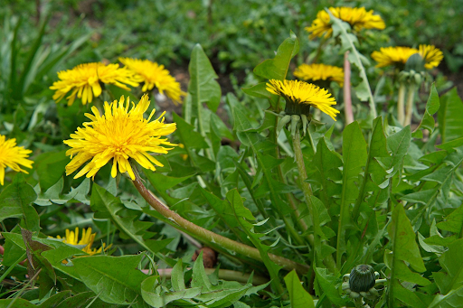

Dandelion
Taraxacum officinale

Dandelions are commonly considered weeds, but they have been traditionally used in teas, salads, and herbal practices.

Dandelions are commonly considered weeds, but they have been traditionally used in teas, salads, and herbal practices.